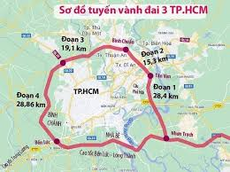

Đoạn vành đai 3 nối đường 25B là một trong các trục kết nối giao thông quan trọng của TP.HCM và TP Đồng Nai. Ban Quản lý dự án đầu tư xây dựng thành phố Đồng Nai vừa báo cáo tiến độ dự án thành phần 3 xây dựng đường vành đai 3 TP.HCM qua địa phương.
Dự án thành phần 3 có tổng chiều dài 11,26km, giai đoạn phân kỳ đầu tư với 4 làn xe cao tốc. Tổng tiến độ hiện đạt 71,9% giá trị hợp đồng, nhưng gói thầu số 26 xây dựng đoạn từ đầu tuyến đến nút giao đường 25C dài 2,2km mới đạt 58,5%, chậm 10% so với kế hoạch.
Theo báo cáo, gói thầu số 29 cũng đang chậm 4,6% khi giá trị thực hiện đạt 74,7%. Trong khi đó, gói thầu số 32 từ nút giao đường 25B đến cuối tuyến đã đạt 77,9%, vượt 10,5% so với kế hoạch.
Ban Quản lý dự án cho biết dự án thành phần 3 đã thông xe kỹ thuật tuyến chính ngày 19-12-2025. Các hạng mục còn lại của gói thầu số 29 và số 32 được kỳ vọng hoàn thiện trước ngày 30-6.
Với gói thầu số 26 chậm tiến độ, đơn vị quản lý đã làm việc cùng Công ty Cổ phần Xây dựng Tân Nam và thống nhất bổ sung nhà thầu phụ để đẩy nhanh tiến độ thi công, nhằm đảm bảo hoàn thành và đưa vào khai thác trước ngày 30-9 theo tiến độ chung.
Vành đai 3 là tuyến giao thông chiến lược giúp giảm áp lực cho các tuyến quốc lộ hướng Đông – Tây và nâng cao kết nối vùng giữa TP.HCM và Đồng Nai.
Cần bổ sung thầu phụ và gia tăng giám sát chất lượng để tránh trễ hẹn khai thác và lãng phí vốn đầu tư.
- Vướng mặt bằng, Đồng Nai thi công chậm tiến độ
- Đồng Nai cam kết giải phóng mặt bằng trước tháng 6-2024
- Tiến độ khai thác có thể lùi đến cuối năm 2026
Nguồn: Tuổi Trẻ